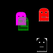

graphicsutilitiesstamp2sprite

Subroutine to draw a stamp on the screen and then capture it as a sprite. Requires 0.9.9.28 or higher.
{kind=link}
# stamp2sprite.kbs
# convert a stamp into a sprite
# will clear screen so do this first
# 2013-01-06 j.m.reneau
# requires BASIC-256 0.9.9.28 or higher
fastgraphics
dim s(1)
#square
#s = {10,10,10,20,20,20,20,10}
#ghost
s = {2,-10, -2,-10, -5,-9, -6,-8, -7,-5, -2,-5, -2,-3, -4,-3, -4,-5, -7,-5, -7,9, -6,7, -5,9, -4,7, -3,9, -2,7, -1,9, 0,7, 1,9, 2,7, 3,9, 4,7, 5,9, 6,7, 7,9, 7,3, -3,3, -3,2, 3,2, 3,3, 7,3, 7,-5, 4,-5, 4,-3, 2,-3, 2,-5, 7,-5, 6,-8, 5,-9 }
spritedim 4
penwidth 1
call stamp2sprite(0,ref(s),white,red,clear,4)
penwidth 2
call stamp2sprite(1,ref(s),clear,clear,white,4)
penwidth 3
call stamp2sprite(2,ref(s),purple,purple,clear,4)
penwidth 4
call stamp2sprite(3,ref(s),rgb(0,255,0,128),rgb(0,255,0,64),clear,4)
print "press any key to stop"
color black
rect 0,0,300,300
dim dx(4)
dim dy(4)
for t = 0 to 3
dx[t] = 1
dy[t] = 1
spriteplace t,rand*300, rand*300
spriteshow t
next t
while key = 0
for t = 0 to 3
spritemove t, dx[t], dy[t]
if spritex(t) <= 0 or spritex(t)>=300 then dx[t] *= -1
if spritey(t) <= 0 or spritey(t)>=300 then dy[t] *= -1
next t
refresh
end while
end
subroutine stamp2sprite(spriteno, ref(points), pencolor, brushcolor, backgroundcolor, scale)
# DRAW A STAMP ON THE SCREEN WITH SPECIFIED COLORS AND SCALE AND
# CAPTURE IT AS A SPRITE
minx = points[0]
miny = points[1]
maxx = points[0]
maxy = points[1]
for t = 1 to points[?]/2-1
if points[t*2] < minx then minx = points[t*2]
if points[t*2] > maxx then maxx = points[t*2]
if points[t*2+1] < miny then miny = points[t*2+1]
if points[t*2+1] > maxy then maxy = points[t*2+1]
next t
w = (maxx-minx)*scale + getpenwidth
h = (maxy-miny)*scale + getpenwidth
x = minx*-scale
y = miny*-scale
clg
color backgroundcolor
rect 0,0,w,h
color pencolor, brushcolor
stamp x,y,scale,0,points
refresh
spriteslice spriteno,0,0,w,h
end subroutine
graphicsutilitiesstamp2sprite.txt · Last modified: 2013/01/06 13:50 by admin